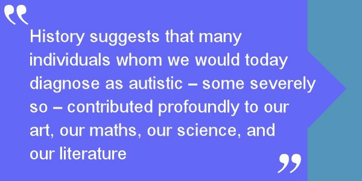
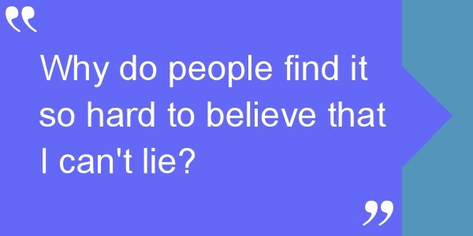
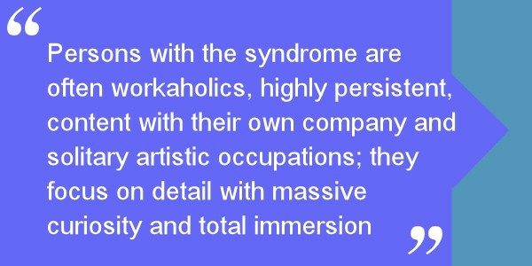
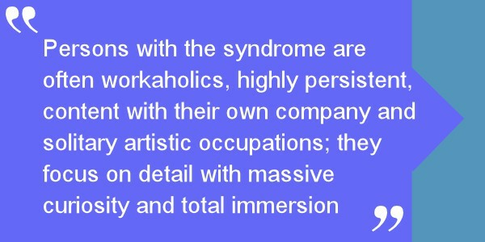
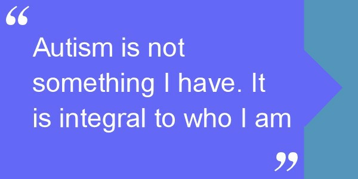
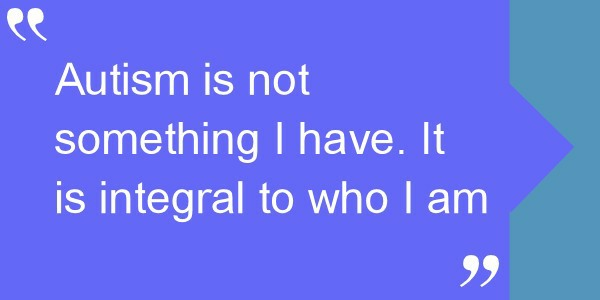
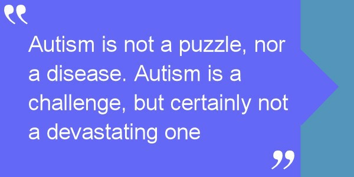
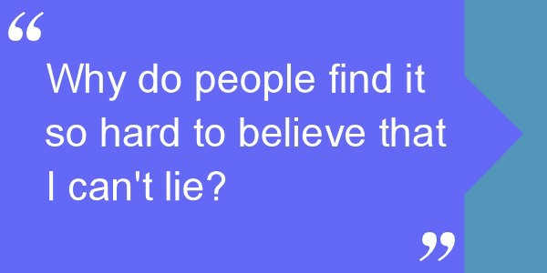

© 2012 The Hidden Aspie | Content - Valerie Carlin | Design & Website - Jan Szafranski | Site Contents
Share this page












We provide support
for those ignored...
Asperger's and Autism are increasingly being recognised and treatment developed, yet there are a number of adults also on the spectrum who are ignored or unrecognised because they are also high functioning. They too need help but none is available. This site hopes to bridge this gap.
Who or What is a Hidden Aspie?
Asperger's Syndrome is part of the broad spectrum of Autism. People on this spectrum see the world differently and can appear socially awkward or eccentric. As it is a spectrum, individuals have different combinations of traits, and experience them at differing intensities. Many Aspies are high-functioning, particularly in their area of expertise, but socially isolated and therefore apt to suffer emotional problems. As their intellects help them to compensate, many higher-functioning Aspies remain undiagnosed or are only diagnosed later in life. As such they have no support to enable them to flourish either at work or in a social setting, and are unable to understand why.
You can access a complete index of all pages at any times via the link at the bottom of every page
Organisations
Latest News
As and when anything appears that may help High-Functioning Aspies, we will share it here or on our Twitter and Facebook pages.
If you want to be kept up-to-date then you can follow us by clicking on the relevant icon above, or by joining our Facebook group below:
Join us on Facebook
Our Facebook group is where we share news, articles and events, and where members can talk with each other. Everyone is welcome.
Visit our Facebook group